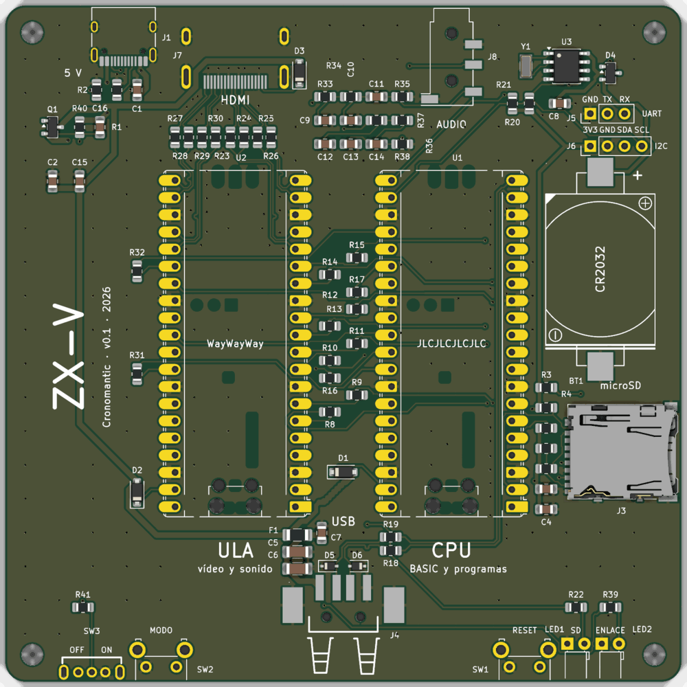

The board
The ZX-V board holds the two Picos and everything they need: HDMI, USB-A for the keyboard, microSD, audio jack, USB-C power, a real-time clock with its coin cell, and the front controls. It is 100 × 100 mm with two layers, and it is designed so that JLCPCB can make it with all the small surface-mount (SMD) parts already soldered. When it arrives you only solder the two Picos and a few large through-hole parts.
The board has not been manufactured or tested yet. The design is complete and passes KiCad's checks, but nobody has built one. If you order it, check everything this page asks you to check, and be ready for surprises. The design files will be published once a board has been built and tested; until then, this page shows what ordering it will involve.

A KiCad render of the bare board, without the Picos. The front edge is at the bottom; some connectors are only drawn as their pads. The printed labels are in Spanish (see Connectors and controls).
Ordering it from JLCPCB
These are the files you will upload, once they are published; you will not need KiCad to order the board.
| File | What it is | Where it goes |
|---|---|---|
zxv-gerber.zip |
The Gerber files: copper, solder mask, silkscreen and paste for both sides, the outline and the drill files | The board ("Add gerber file") |
zxv-bom.csv |
The bill of materials for assembly: 76 parts, 28 different LCSC part numbers | Assembly, "BOM file" |
zxv-cpl.csv |
Where each part goes and how it is rotated | Assembly, "CPL file" |
zxv-schematic.pdf |
The schematic, for reference | Not uploaded |
The names of the buttons and options below are the ones JLCPCB's website uses at the time of writing; they may change slightly.
1. The board
- On jlcpcb.com, start a PCB order and upload
zxv-gerber.zip. The website reads the size from the files: it should say 2 layers, 100 × 100 mm. - Choose these options (leave anything else at its default):
| Option | Choose |
|---|---|
| Base material | FR-4 |
| Layers | 2 |
| PCB thickness | 1.6 mm |
| Surface finish | HASL, lead-free |
| PCB colour | Any you like |
| Remove order number | Specify a location |
- The order number. JLCPCB prints its own order number on the
silkscreen. The board has a place marked for it under the CPU Pico: the
text
JLCJLCJLCJLC. With Specify a location they print the number there, where the Pico will hide it; if you leave the default, they put it wherever they want, perhaps right on the front. (There is also aWayWayWaymark under the ULA Pico, for ordering from PCBWay.)
2. Assembly
- Turn on PCB Assembly in the same order.
- Choose the Economic assembly, on the top side. Everything to be assembled is SMD on the top, so the cheap option is enough. Choose how many of the boards you want assembled.
- Upload
zxv-bom.csvas the BOM andzxv-cpl.csvas the CPL (pick-and-place) file. - In the list of parts, check that all 28 lines are matched to a part and that every part is in stock. The Picos, buttons, switch, LEDs and pin headers do not appear: you solder those yourself, so they are not in the files.
If a part is out of stock, look for an equivalent with the same value and package in JLCPCB's catalogue. For example, if the eight 240 Ω resistors of the HDMI (C17572) were out of stock, any other 240 Ω resistor in the same 0805 package would do.
3. The placement preview
JLCPCB places each part using its own footprint, which is not always rotated like KiCad's or centred in the same place. The CPL file already corrects the known differences, but look at the placement preview before you pay. Zoom in and check that:
- the pin 1 dot of U3 (the clock chip, 8 pins), Q1 and D4 (3 pins each) sits on the pin 1 mark of the board;
- the stripe of the diodes D1, D2 and D3 is on the side of the stripe printed on the board;
- the USB-C (J1), the microSD socket (J3) and the audio jack (J8) sit squarely on their pads, as do the HDMI (J7), the USB-A (J4) and the coin cell holder (BT1).
If a part looks rotated, you can usually rotate it in the preview, or ask JLCPCB in the order notes.
What it costs
The parts come to roughly 5 US dollars per board (without the Picos). On top of that, JLCPCB charges a one-off fee per order (not per board) for each Extended part that is not a preferred one: here that is eight parts (the coin cell holder, the two fuses, the USB-C, the microSD socket, the USB-A, the HDMI and the audio jack), around 3 dollars each. Spread over an order of 5 boards that is about 5 dollars per board. These figures are estimates: the quote on the website has the real ones.
Without JLCPCB's assembly
Every SMD part can also be soldered by hand: the resistors and capacitors are
0805 (a comfortable size) with long pads, the chips have visible legs, and only
the clock crystal is small (3.2 × 1.5 mm, two pads; easy with flux). You can
also order a stencil with the boards and use a hot plate or an oven: all the
SMD parts are on the top side. The same LCSC part numbers in zxv-bom.csv work
from LCSC or any other shop.
The parts you solder yourself
| Ref. | Part | Qty | LCSC | Notes |
|---|---|---|---|---|
| U1, U2 | Raspberry Pi Pico 2 | 2 | — | U1 is the CPU Pico, U2 the ULA Pico |
| (U1, U2) | Male pin header, 1 × 20, 2.54 mm | 4 | C50981 | Not needed if you solder the Picos by their edges, or if your Picos come with headers |
| SW1, SW2 | Push button, 6 × 6 mm, right-angle (Omron B3F-3152) | 2 | C231320 | RESET and MODO (mode) |
| SW3 | Slide switch, right-angle (Shou Han SK12D07VG4) | 1 | C393937 | Power (OFF / ON) |
| LED1 | LED, 3 mm, diffused green (Lite-On LTL-4231N) | 1 | C125082 | SD |
| LED2 | LED, 3 mm, diffused red (Lite-On LTL-4221N) | 1 | C125081 | ENLACE (link) |
| J5 | Male pin header, 1 × 3, 2.54 mm (optional) | 1 | — | UART |
| J6 | Male pin header, 1 × 4, 2.54 mm (optional) | 1 | — | I2C |
| — | CR2032 coin cell | 1 | — | Goes in BT1, which comes assembled |
Soldering
Solder the low parts at the front first, then the optional headers, and the Picos last.
The front controls and LEDs
All five sit at the front edge and stick out of it, so that they can come through holes in the front of a case. They are right-angle parts that lie flat on the board.
- The push buttons (SW1, SW2): push each one fully onto the board, with its body up to the edge; the button sticks out about 4 mm. The pins only fit one way.
- The slide switch (SW3): push it fully onto the board and solder its three
pins and its two mounting tabs. The lever sticks out about 3.4 mm. Seen from
the front, the lever to the right is on and to the left is off: the
board says
OFFabove the left half andONabove the right half. - The LEDs (LED1 green, LED2 red): they lie flat, pointing out of the front
edge. Bend both legs at a right angle so that the LED lies parallel to the
board, about 2 mm above it, with its tip about 1 mm past the edge. Polarity
matters: the cathode (the shorter leg, on the flat side of the LED's rim)
goes to the square pad. Do not mix them up: the green one is LED1
(
SD), the red one is LED2 (ENLACE).
The optional headers
J5 (3 pins, UART) and J6 (4 pins, I2C) are at the back right. You
only need them for debugging (J5) or to connect an I2C module such as a DS3231
clock (J6). Straight 2.54 mm male headers.
The Picos
The footprint accepts the Picos two ways:
- With pin headers (the easiest to solder): solder two 1 × 20 headers to the Pico, or buy Picos with headers already fitted, and then solder the headers into the holes of the board. The Pico sits a little above the board.
- By their castellated edges: lay the Pico flat on the board, with each half-hole on its pad, and solder along both edges. Half the joints, and lower; harder to undo.
Orientation: the Pico's components face up and its micro-USB connector
points to the front edge (towards the USB-A and the buttons). The ULA Pico
goes on the left and the CPU Pico on the right, as seen from the front;
the board says ULA and CPU in front of each one.
Both Picos are identical until they have firmware. It is easiest to put the firmware on each Pico before soldering it and to label it (The firmware). You can also do it afterwards: the micro-USB and the BOOTSEL button stay accessible.
The coin cell
Slide a CR2032 into the holder (CR2032, on the right-hand side) with its
+ side (the flat side with the writing) facing up, as marked by the +
on the board. Without it the machine works, but forgets the time, the language
and the keyboard layout when switched off.
Assembly checklist
- [ ] The assembled board has no visible solder bridges, especially on the HDMI and USB-C connectors.
- [ ] SW1 (
RESET) and SW2 (MODO) pushed fully down and soldered. - [ ] SW3 (
OFF/ON) soldered, with its mounting tabs. - [ ] LED1 green at
SD, LED2 red atENLACE, cathode on the square pad. - [ ] Optional: J5 and J6.
- [ ] Each Pico flashed with its firmware:
zxv_cpu.uf2on the CPU Pico,zxv_ula_link.uf2on the ULA Pico. - [ ] ULA Pico on the left, CPU Pico on the right, micro-USB to the front.
- [ ] All 80 pins of the Picos soldered (40 each).
- [ ] CR2032 in place,
+up.
The first power-on
Do the first checks before soldering the Picos, with a multimeter.
- No short circuit. With nothing plugged in, measure the resistance between the two outer contacts of the USB-A port (5 V and ground). It must not be close to 0 Ω.
- The power switch. Plug in the USB-C charger and measure the voltage
between those same two contacts of the USB-A port: about 5 V with the lever
to the right (
ON), 0 V with it to the left (OFF). You can also measure, on each Pico footprint, between pin 39 (VSYS) and pin 38 (GND), the second and third pins from the micro-USB end on the pin 40 side: a little less than 5 V when on (a protection diode drops a few tenths of a volt). Unplug the charger. - Solder the Picos, insert a microSD card, and connect the HDMI screen and a USB keyboard.
- Switch on. The red
ENLACELED blinks once (mode 0), and then stays lit while the ULA Pico receives images from the CPU Pico. The screen shows the BASIC. - Try it:
PRINT 6*7, thenCAT(the greenSDLED flashes while it reads the card), thenBEEP 1,0for sound. - The board test:
LOAD "ROM:boardtest"checks, one by one, what a program can see: the screen (by its HPD), the clock, the SD card, the keyboard, the gamepads, the mouse and the sound (keys 1, 2 and 3: beeper, AY left and right). Press MODE to see the video line change, and Esc to go back. Press P for the palettes: the ROM's usual colours and the same ones set by hand, line by line, with no stripes showing; a grey ramp; a fire ramp that cycles; and the border, which changes every second (black, black, orange and purple) while nothing else does. Space stops the ramp, and the "Palettes CRC" must read95AF97D6, the same as in the emulator and as on the diagnostic page (Ctrl+Alt+F12), in the ULA's line: the palettes reach the ULA intact. P again goes back to the test.
The Picos can still be connected to a computer by their micro-USB while the board is powered: the protection diodes keep the two supplies apart. Not while it is switched off: a single Pico would feed the other one through the link pins. If something does not work, see What to check.
Connectors and controls
The labels printed on the board are in Spanish.
| Label | Where | Part | What it is |
|---|---|---|---|
5 V |
Back, left | J1, USB-C | Power: any 5 V USB-C charger of 2 A. Power only, no data |
HDMI |
Back, behind the ULA | J7 | The screen: picture, and sound in the HDMI mode |
AUDIO |
Back, behind the CPU | J8, 3.5 mm jack | Stereo line-level sound, always on |
OFF ON |
Front, far left | SW3 | Power switch: lever to the right is on, to the left is off |
MODO |
Front, left | SW2 | Mode: a short press switches video mode; a long press (1 to 5 s) shows or hides the diagnostic page; held at power-on, the safe mode |
USB |
Front, centre | J4, USB-A | Keyboard, mouse, gamepads (several through a hub). Protected by a 500 mA fuse |
RESET |
Front, right | SW1 | Restarts both Picos, like switching off and on |
SD |
Front, right | LED1, green | Lit while the machine uses the SD card or the clock |
ENLACE |
Front, far right | LED2, red | Link: at start-up it blinks the mode number plus one; then it is lit while images arrive from the CPU Pico, blinks if some arrive with errors, and is off if none arrive |
microSD |
Right side | J3 | The SD card (push to insert, push again to release) |
CR2032 + |
Right side | BT1 | The clock's coin cell, + up |
UART GND TX RX |
Back, right | J5 (not fitted) | The CPU Pico's debug serial port, 3.3 V, 921600 baud. TX is the Pico's output |
I2C 3V3 GND SDA SCL |
Back, right | J6 (not fitted) | The clock's I2C bus, 3.3 V, for an extra module (a DS3231 clock module is used instead of the on-board one if present) |
ULA vídeo y sonido |
Centre left | U2 | The ULA Pico ("video and sound") |
CPU BASIC y programas |
Centre right | U1 | The CPU Pico ("BASIC and programs") |
To start in the safe video mode on this board, hold MODO down while you
switch on, or while you press and release RESET.